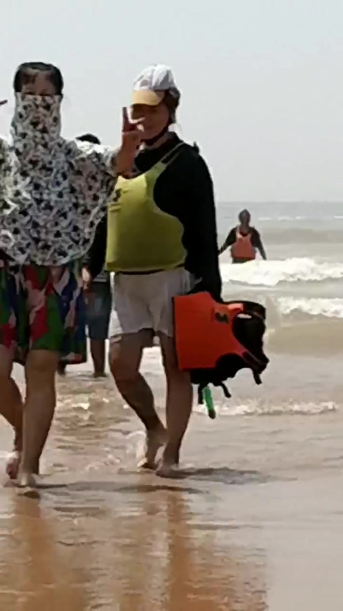

舟山
/
玩乐地
/
朱家尖东沙
朱家尖东沙
日出胜地 · 冲浪公园 · 人少清净

朱家尖东沙
建议从携程/App查看最新实拍
东沙海滩实景 · 照片待补充
日出
冲浪
人少
露营
项目
详情
地址
浙江省舟山市普陀区朱家尖度假路 1288 号
门票
旺季成人 35；儿童优待票 17.5；日出早场票约 20
营业时间
04:00–21:30（旺季）
特点
比南沙人少，适合清净玩沙
东沙涌日景观佳，可看日出
东沙冲浪公园可体验冲浪（适合大人）
适合谁
挖沙
冲浪/日出
注意：
看日出需早起，4:00–6:45 有日出票。
冲淋设施不如南沙齐全。
介绍
如果想避开南沙人流，东沙是更好的选择。沙质同样细腻，人少清净，适合带孩子在海边慢慢玩。